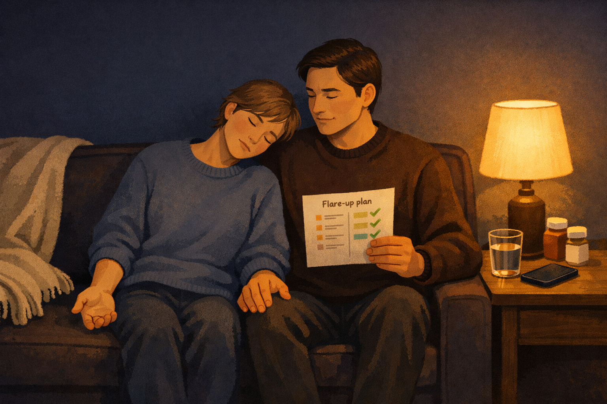

By Rustam Iuldashov
30 years lived experience with chronic migraine | Sources: 29 peer-reviewed references including Cephalalgia (n=291), Nature Reviews Neurology, The Journal of Headache and Pain (2026), Frontiers in Neurology | Last updated: April 2026
Medical Review: This content is based on 29 peer-reviewed sources including Cephalalgia, Nature Reviews Neurology, Journal of Neurology, Neurosurgery & Psychiatry, The Journal of Headache and Pain, Frontiers in Neurology, Neurology, and other authoritative journals.
Important Notice: This article is for informational purposes only and does not replace professional medical advice. Hemiplegic migraine requires specialist oversight — do not adjust medications based on this article alone.
Key Takeaways
- Hemiplegic migraine affects ~1 in 10,000 people and causes temporary one-sided weakness that mimics stroke — always call emergency services for first-time symptoms [1][2]
- The “migraine march” (gradual symptom spread over minutes) distinguishes HM from stroke (sudden maximum onset), but only professional evaluation can confirm the difference [8][9]
- Triptans and ergotamines are contraindicated — knowing your medication restrictions may be the most important safety fact you carry [15][16]
- First-line prevention: verapamil, flunarizine, acetazolamide; emerging CGRP antibody data offers new hope [1][19][20]
- Build three tools now: an emergency care card, a 24-hour medication list, and a written flare-up plan — they advocate for you when you cannot [13][23]
- Seek a headache specialist, not just a general neurologist — and consider genetic testing for familial cases [28]
Your left arm drops. Words dissolve on your tongue. Half your face sags like melted wax. Everything inside you screams one word: stroke.
But the CT scan comes back clean. The MRI finds no clot, no bleed, no explanation. Then a neurologist walks in and says something you’ve never heard: hemiplegic migraine.
It is one of the rarest and most terrifying forms of migraine — a subtype that hijacks motor function and mimics a stroke so convincingly that emergency physicians have administered clot-busting drugs to patients who didn’t need them. [1] It affects roughly 1 in 10,000 people, with familial and sporadic forms occurring in equal measure. [2] If you live with it, you already know the dread that shadows every attack. If someone you love does, the knowledge in this article may be the most important thing you carry into their next episode.
This isn’t a clinical overview. It’s the practical guide I wish had existed when hemiplegic migraine first entered my world.
A Wave That Shuts Down Movement
Every migraine aura begins with a phenomenon called cortical spreading depression (CSD) — a slow wave of intense electrical activity followed by silence that creeps across the brain’s surface at roughly 3 to 5 millimeters per minute. [3] Think of a power surge rolling through a building: lights flare, then go dark, room by room.
In a typical aura, this wave crosses the visual cortex. You see zigzag lines. Spots. Shimmering arcs. In hemiplegic migraine, the wave invades the motor cortex — the strip of brain tissue that governs voluntary movement. [4] When it does, one side of your body loses strength. Your hand goes limp. Your arm feels impossibly heavy. Your leg may buckle. Your face droops.
Why does this happen in some brains and not others? Genetics holds much of the answer. Four genes have been identified: CACNA1A, ATP1A2, SCN1A, and more recently PRRT2. [5][6] All four encode proteins that control ion transport — the electrical language neurons use to communicate. When these genes carry mutations, the threshold for cortical spreading depression plummets. The wave fires more easily, spreads more aggressively, and produces more severe symptoms. [7]
But here’s what many people don’t realize: you don’t need a family history. Sporadic hemiplegic migraine accounts for roughly half of all cases. [2] You may carry unknown genetic variants, or the trigger may involve mechanisms science hasn’t yet mapped.
The Stroke Question — Every Single Time
The most urgent question you’ll face with every attack: is this a migraine or a stroke?
One difference matters above all others. In a stroke, symptoms strike at maximum intensity within seconds. In hemiplegic migraine, symptoms march — gradually spreading over 5 to 30 minutes, typically starting in the hand, climbing to the arm, then the face. [8][9] This “migraine march” is cortical spreading depression propagating across the cortex in real time.
Knowing this doesn’t make it less terrifying. And the research makes one point unambiguously clear: if you experience one-sided weakness for the first time, call emergency services. [10] Always. Hemiplegic migraine is a diagnosis of exclusion — doctors must rule out stroke before confirming it. People with HM carry elevated stroke risk compared to the general population, and actual ischemic strokes can occur alongside the condition. [1][11]
⚠️ When to Seek Emergency Help
Any new episode of one-sided weakness, facial drooping, or sudden speech difficulty demands immediate emergency evaluation — even if you have an existing hemiplegic migraine diagnosis. Symptoms can change. Strokes can happen to people with HM too.
If your symptoms are more severe than usual, last longer than usual, or feel different in any way, call your local emergency number immediately. Do not use this article to self-diagnose or to decide whether you’re “just” having a migraine.
Even after years of diagnosis, the fear remains. One patient on Mayo Clinic Connect wrote: “I stutter and slur. I cry over the slightest things. And I’m scared that one day, before some professional takes this seriously, something permanent will happen.” [12]
That fear is rational. Which is exactly why preparation is everything.
Your ER Survival Kit
Here is the single most practical thing you can do today: create an emergency care card.
Maria Mormile, a patient advocate with the Association of Migraine Disorders, carries a card listing her name, her diagnosis — hemiplegic migraine — basic care instructions, and three emergency contact numbers. [13] Large text. Bold print. On her phone and on laminated card stock.
Why does this matter so much? Because hemiplegic migraine can steal your voice. During an attack, you may be fully aware of your surroundings but unable to speak, unable to lift your arm, unable to explain what is happening to you. [13] Emergency teams follow stroke protocols by default — as they should. But if they see your history, they can avoid unnecessary and potentially harmful interventions. Case reports document hemiplegic migraine patients who received thrombolytic drugs (alteplase) intended for stroke — medications that carry bleeding risk and were never needed. [14]
Three Steps That Change Everything
1. Relocate your tools early. Once prodrome begins, move your emergency card and phone to the side of your body that still works. The paralysis typically hits one side — your functional hand needs access. [13]
2. Keep a 24-hour medication list. In the ER, this list prevents dangerous drug interactions and accelerates triage. [13]
3. Build a one-page “attack profile.” Include your typical symptom progression, how long your aura usually lasts, which side is affected, and whether you lose speech. Hand this to the ER team instead of trying to explain through impaired communication.
A note for partners and family: When hemiplegic migraine takes away your loved one’s ability to speak, you become their voice. Learn the contents of the emergency card. Know which medications they’ve taken. Be the person who hands the attack profile to paramedics and says: “This is hemiplegic migraine — here’s their history.” Practicing this role before an attack happens is not paranoia. It’s care.
Treatment: What Works, What’s Forbidden, and What’s New
Hemiplegic migraine treatment is uniquely constrained because several common migraine medications are off-limits. Here’s a clear breakdown:
⛔ CONTRAINDICATED — Do not take:
- Triptans (sumatriptan, rizatriptan, etc.) — vasoconstrictive risk during motor aura may worsen brain ischemia [15][16]
- Ergotamines — same vasoconstriction concern [15]
- Beta-blockers (for prevention) — some specialists advise against these for HM [1]
If you have hemiplegic migraine and your doctor prescribes a triptan, question it. This is the most critical medication safety point for anyone with HM.
✅ ACUTE TREATMENT — When an attack hits:
- NSAIDs (ibuprofen, naproxen) + antiemetics — the mainstay for most attacks [1]
- Intranasal ketamine — shown benefit specifically in familial HM when given at the very onset [1][17]
- IV verapamil — for severe attacks requiring hospitalization; limited case report evidence [18]
🛡 PREVENTION — First-line medications:
- Verapamil (calcium channel blocker) [1][19]
- Flunarizine [1][19]
- Acetazolamide [1][19]
All three target ion channel function — which makes direct mechanistic sense given the gene mutations involved.
Second-line options: Lamotrigine (particularly effective when prolonged aura is the dominant symptom), topiramate, valproic acid, amitriptyline. [1][19]
🔬 EMERGING — The CGRP frontier:
Anti-CGRP monoclonal antibodies (erenumab, fremanezumab, galcanezumab, eptinezumab) have been systematically excluded from hemiplegic migraine clinical trials because of the condition’s rarity. But a growing body of case reports and a 2026 systematic review analyzing individual patient data suggest these medications may be both safe and effective in HM. [20][21]
One Mayo Clinic Connect patient reported that atogepant (Qulipta) completely stopped their hemiplegic episodes. [12] This remains off-label, requiring specialist oversight — but for a condition with desperately limited options, it represents genuine new hope.
💊 Supplements — Low-Risk Foundation
The CACNA1A Foundation recommends considering CoQ10, riboflavin (vitamin B2), and vitamin D3 as adjunctive supplements. These carry minimal risk and have established evidence in broader migraine prevention. [22]
Quick-Reference Treatment Table
| Category | Status | Examples |
|---|---|---|
| Contraindicated | Strictly avoid | Triptans, Ergotamines, Beta-blockers (per some specialists) |
| Acute treatment | First-line | NSAIDs + Antiemetics |
| Acute treatment | Specialist use | Intranasal Ketamine, IV Verapamil |
| Prevention | First-line | Verapamil, Flunarizine, Acetazolamide |
| Prevention | Second-line | Lamotrigine, Topiramate, Valproic acid, Amitriptyline |
| Emerging | Off-label / Promising | CGRP antibodies (Erenumab, Fremanezumab, etc.), Atogepant |
| Supplements | Adjunctive | CoQ10, Riboflavin (B2), Vitamin D3 |
The Flare-Up Plan: Speaking When You Can’t
Beyond medication, the most powerful tool you can build is a migraine flare-up plan — a written document that guides your care during the moments when you cannot advocate for yourself.
Sarah Alexander-Georgeson, who lives with hemiplegic migraine, designed hers as a two-column list: one column for the symptoms she’s experiencing, the other for corresponding remedies. [23] During a severe attack — when cognition fractures and even recalling to ask for a heat pack becomes impossible — she simply points. Her family immediately knows what to do: adjust the temperature, eliminate strong odors, administer a specific medication.
This isn’t a nice-to-have. It’s essential infrastructure. During hemiplegic migraine, the brain is under siege. Patients describe being unable to recall simple self-care actions they know perfectly well between attacks. [23] The written plan removes the need to think during the worst possible moments.
For caregivers and family members: Your role during a hemiplegic migraine attack is not to fix what’s happening — it’s to follow the plan. Know where the flare-up document is kept. If the person cannot point, go through the columns yourself — check their symptoms visually and match to the remedy column. Stay calm and visible. Speak in short sentences. Your presence and preparedness are the most powerful medicine in the room.
Build the plan now, while everyone’s brain is clear.

The Triggers You Can Control
Hemiplegic migraine is maddeningly unpredictable. One month, an attack might bring minor weakness and extreme pain. The next month: extreme paralysis, minimal headache. [24] Duration ranges from hours to days — and in rare cases, up to four weeks. [1] Some patients report hallucinations during severe episodes: phantom music, phantom smells, walls closing in. [25]
But three triggers emerge consistently across patient reports and clinical literature: poor sleep quality, physical overexertion, and acute emotional stress. [25][26] Research on familial hemiplegic migraine specifically found that up to 46% of patients could identify at least one trigger preceding their first attack. [26]
A rigid routine is the closest thing to a universal preventive strategy. Consistent sleep and wake times — including weekends. Consistent meals. Moderate exercise rather than intense bursts. [27] This isn’t glamorous advice. But for hemiplegic migraine, routine is medicine.
One meaningful reassurance: the frequency of attacks tends to decrease after age 50, as hemiplegic episodes gradually evolve into more typical migraine attacks without motor symptoms. [1] It’s not a cure. But for many, it’s a horizon worth knowing about.
Finding the Right Specialist — and Your People
Standard neurologists may not have deep experience with hemiplegic migraine. Dr. Thomas Berk, speaking on the Association of Migraine Disorders podcast, said it plainly: “These diagnoses are complicated enough that you really need subspecialty care beyond a neurologist. Oftentimes you need a headache specialist.” [28]
For familial cases, genetic testing can confirm the specific gene mutation involved — but this may require referral to a geneticist, and insurance coverage varies. [28]
Community matters as much as medicine for a condition this isolating. Move Against Migraine (Facebook group by the American Migraine Foundation) connects thousands of migraine patients including those with HM. [29] The CACNA1A Foundation provides the most comprehensive resource for familial hemiplegic migraine type 1, including evolving treatment guidelines and emergency management protocols. [22] Shades for Migraine offers a platform to share your experience publicly around Migraine Awareness Month each June. [13]
You are not alone in this. Even when the paralysis makes you feel like you are.
The Paralysis Is Temporary. The Knowledge Stays.
There is no cure for hemiplegic migraine — not yet. But there is something almost as powerful: preparation. Every tool in this article — the emergency card, the attack profile, the flare-up plan, the treatment table, the specialist who understands your brain — is a layer of defense between you and the chaos of an unplanned attack.
Hemiplegic migraine will keep being terrifying. That’s the nature of a condition that wears the mask of the most feared neurological emergency. But fear shrinks when you understand the wave moving through your cortex. When your plan is in your pocket. When the people around you know exactly what to do.
You are not having a stroke. You are living with one of the most dramatic manifestations of migraine disease — and with the right knowledge and the right team, you can live with it well.
Key Takeaways
- Hemiplegic migraine affects ~1 in 10,000 people and causes temporary one-sided weakness that mimics stroke — always call emergency services for first-time symptoms [1][2]
- The “migraine march” (gradual symptom spread over minutes) distinguishes HM from stroke (sudden maximum onset), but only professional evaluation can confirm the difference [8][9]
- Triptans and ergotamines are contraindicated — knowing your medication restrictions may be the most important safety fact you carry [15][16]
- First-line prevention: verapamil, flunarizine, acetazolamide; emerging CGRP antibody data offers new hope [1][19][20]
- Build three tools now: an emergency care card, a 24-hour medication list, and a written flare-up plan — they advocate for you when you cannot [13][23]
- Seek a headache specialist, not just a general neurologist — and consider genetic testing for familial cases [28]
⚕️ Important Medical Disclaimer
This article is for informational and educational purposes only and does not constitute medical advice, diagnosis, or treatment. The author, Rustam Iuldashov, is not a licensed physician, neurologist, or healthcare professional. He is a patient advocate with 30 years of personal experience living with chronic migraine.
All clinical claims in this article are sourced from peer-reviewed research published in indexed medical journals. Study designs and sample sizes are noted where applicable.
Always consult a qualified healthcare provider for questions about your individual health, migraine treatment, or medication decisions. Hemiplegic migraine requires specialist oversight — do not adjust medications based on this article alone.
If you experience one-sided weakness, facial drooping, or speech difficulty for the first time, call emergency services immediately. Do not attempt to self-diagnose. This content was last reviewed for accuracy in April 2026.
References
- Kumar A, Samanta D, Emmady PD, Arora R. “Hemiplegic Migraine.” StatPearls, StatPearls Publishing (2023). PMID: 32491601. Study design: Review. n=N/A.
- Thomsen LL, Eriksen MK, Romer SF, et al. “An epidemiological survey of hemiplegic migraine.” Cephalalgia, 22(5):361–375 (2002). doi:10.1046/j.1468-2982.2002.00371.x. Study design: Cross-sectional epidemiological survey. n=291.
- Charles AC, Baca SM. “Cortical spreading depression and migraine.” Nature Reviews Neurology, 9(11):637–644 (2013). doi:10.1038/nrneurol.2013.192. Study design: Review. n=N/A.
- Dreier JP, Reiffurth C. “The stroke-migraine depolarization continuum.” Neuron, 86(4):902–922 (2015). doi:10.1016/j.neuron.2015.04.004. Study design: Review. n=N/A.
- Al-Hassany L, Haanes KA, Maassenvandenbrink A. “Migraine: a Review on Its History, Global Epidemiology, Risk Factors, and Comorbidities.” Frontiers in Neurology, 12:800605 (2022). doi:10.3389/fneur.2021.800605. Study design: Narrative review. n=N/A.
- Pelzer N, Haan J, Stam AH, et al. “Clinical spectrum of hemiplegic migraine and chances of finding a pathogenic mutation.” Neurology, 90(6):e575–e582 (2018). doi:10.1212/WNL.0000000000004966. Study design: Retrospective cohort. n=200.
- Van den Maagdenberg AM, Pietrobon D, Pizzorusso T, et al. “A Cacna1a knockin migraine mouse model with increased susceptibility to cortical spreading depression.” Neuron, 41(5):701–710 (2004). doi:10.1016/S0896-6273(04)00085-6. Study design: Experimental (animal model). n=N/A.
- Di Stefano V, Rispoli MG, Pellegrino N, et al. “Diagnostic and therapeutic aspects of hemiplegic migraine.” Journal of Neurology, Neurosurgery & Psychiatry, 91(7):764–771 (2020). doi:10.1136/jnnp-2020-322850. Study design: Systematic review. n=N/A.
- “Hemiplegic Migraine — The Migraine That Mimics a Stroke.” Headache Australia (2025). Clinical overview. n=N/A.
- “Hemiplegic Migraine vs. Stroke.” Cleveland Clinic (2025). Patient education resource. n=N/A.
- “Not All Patients with Hemiplegia Need Alteplase: A Case of Hemiplegic Migraine.” European Journal of Case Reports in Internal Medicine, PMC7279908 (2020). Study design: Case report. n=1.
- Mayo Clinic Connect patient discussions: “Hemiplegic Migraine” and “Hemiplegic Migraines — Doctor/Hospital Frustration — Michigan” threads (2024–2025). Patient reports. n=N/A.
- Mormile M. “Hemiplegic Migraine: Symptoms, Treatments and Advice For Managing Attacks.” Association of Migraine Disorders (2025). Patient advocacy resource. n=N/A.
- Kaushal R, Kashyap A, Yogesh S, et al. “A rare case of sporadic hemiplegic migraine mimicking stroke.” Study design: Case report. n=1.
- Araki NT, et al. “Clinical Practice Guideline for Headache Disorders 2021.” Neurology and Clinical Neuroscience (2025). doi:10.1111/ncn3.70042. Study design: Clinical practice guideline. n=N/A.
- “Hemiplegic migraine.” The Migraine Trust (2021). Patient information. n=N/A.
- Kaube H, Herzog J, Kaufer T, et al. “Aura in some patients with familial hemiplegic migraine can be stopped by intranasal ketamine.” Neurology, 55(1):139–141 (2000). doi:10.1212/WNL.55.1.139. Study design: Case series. n=11.
- “Sporadic Hemiplegic Migraine Treatment: Know Your Options.” Healthline (2023). Clinical review. n=N/A.
- “Hemiplegic Migraine: Paralysis with Migraine.” Migraine Canada (2025). Expert clinical guide. n=N/A.
- Héja M, Oláh L. “Efficacy of anti-calcitonin gene-related peptide monoclonal antibodies in hemiplegic migraine: a case report and review of literature.” Frontiers in Neurology, 16:1579203 (2025). doi:10.3389/fneur.2025.1579203. Study design: Case report + literature review. n=1.
- Iannone LF, et al. “Effectiveness and safety of anti-CGRP monoclonal antibodies in hemiplegic migraine: an individual patient quantitative analysis.” The Journal of Headache and Pain (2026). doi:10.1186/s10194-026-02283-5. Study design: Systematic review with individual patient analysis. n=pooled.
- “Hemiplegic Migraine Treatment Options.” CACNA1A Foundation (2025). Expert panel resource. n=N/A.
- Alexander-Georgeson S. “How to Support Someone Through a Migraine Attack” and “Managing Stress with Hemiplegic Migraine.” Teva Pharmaceuticals (2023–2024). Patient narrative. n=1.
- “How to Get Relief from a Hemiplegic Migraine.” PainFreeLife.net (2023). Clinical overview. n=N/A.
- Alexander-Georgeson S. “Managing Stress with Hemiplegic Migraine.” Teva Pharmaceuticals (2024). Personal HM diary. n=1.
- Hansen JM, Hauge AW, Ashina M, Olesen J. “Trigger factors for familial hemiplegic migraine.” Cephalalgia, 31(12):1274–1281 (2011). doi:10.1177/0333102411415878. Study design: Prospective survey. n=27.
- Berk T. “Hemiplegic Migraine & Migraine with Unilateral Motor Symptoms (MUMS).” Association of Migraine Disorders Podcast, S6:Ep4 (2024). Expert interview. n=N/A.
- Berk T. Ibid.
- “Hemiplegic Migraine: Symptoms & Treatments.” American Migraine Foundation (2023). Patient resource. n=N/A.

How We Create Content
- Peer-reviewed sources only. We cite research from Cephalalgia, Nature Reviews Neurology, Neurology, Journal of Neurology, Neurosurgery & Psychiatry, The Journal of Headache and Pain, Frontiers in Neurology, Neuron, and other authoritative journals.
- Large-sample evidence prioritized. Key claims reference an epidemiological survey of 291 patients across the Danish population of 5.2 million, a retrospective cohort of 200 patients, and a 2026 systematic review pooling individual HM patient data.
- Source transparency. All 29 references are numbered and verifiable. DOI links provided where available.
- Experience + Science. 30 years of personal migraine experience combined with peer-reviewed evidence on hemiplegic migraine, emergency preparedness, and pharmacological treatment.
- Regular updates. We review articles when significant new research emerges. Next scheduled review: October 2026.
- No conflicts of interest. We receive no funding from pharmaceutical companies, medical device manufacturers, or any commercial entity with interest in migraine treatment.
Track Attacks. Spot Patterns. Protect Your Windows.
Migraine Companion helps you log attacks, triggers, medications, and symptom progression — including one-sided weakness, aura duration, and recovery. Built by someone who has navigated migraine for 30 years.
Last reviewed: April 2026
Next scheduled review: October 2026